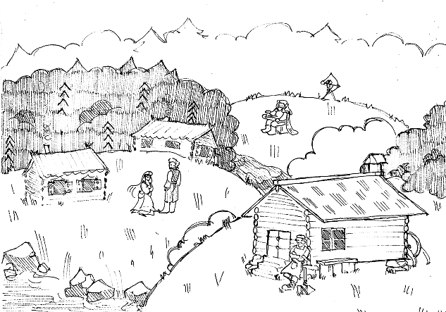
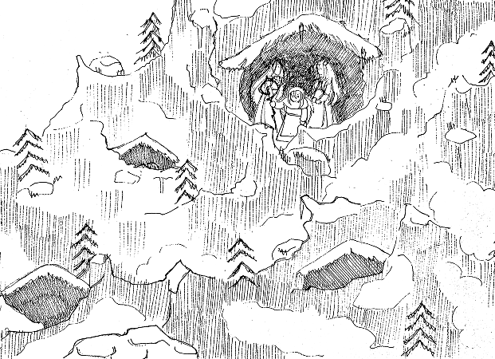
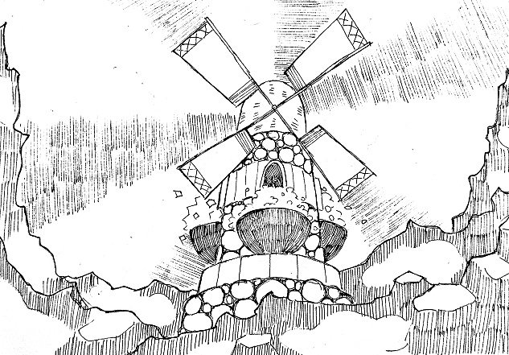
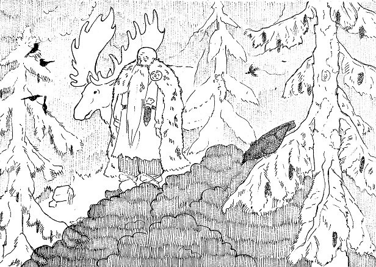
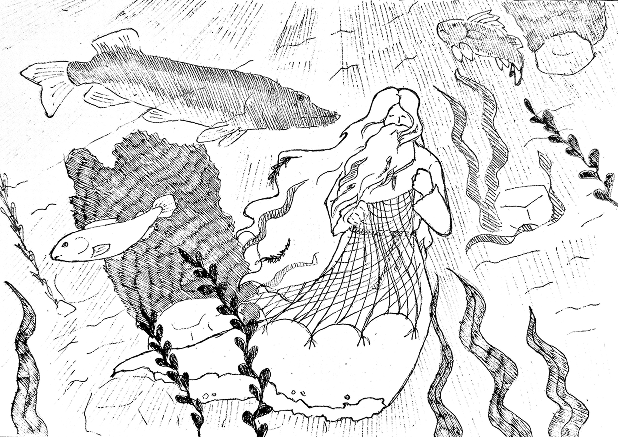

Калевальский мир раньше состоял из первозданных небес и моря. Стоило Ильматар уронить яйцо утки, как из его осколков появились земли той Калевалы, которую мы знаем сейчас.
карта калевалы
Мир Калевалы полон магических мест, каждое из которых имеет своих стражей. Каждое место является сильной метафорой к различным сферам жизни финно-угров.
КАЛЕВАЛА
Земля озер и лесов, бескрайний дом для отважных героев Калевалы: Вяйнямёйнена и его братьев, Айно, Йоукахайнена и Куллерво.
Здесь рождаются песни и куются великие сюжеты рунического эпоса, как трагичные, так и счастливые.

ТУОНЕЛА
Подземное царство мертвых, окруженное бурной рекой Туони. Это место охраняется туонельским лебедем и стражем с тремя псами.
Сюда отправляются за тайными знаниями, преодолевая смертельные опасности.
ПОХЪЁЛА
Суровые, туманные и мрачные северные земли под властью хитрой колдуньи Лоухи и ее двух дочерей.
Вечное противостояние зеленой Калевалы и ледяной Похъёлы за владение мельницей Сампо.

САМПО
Волшебная чудо-мельница, выкованная Ильмариненом. Она мелет муку, соль и золото.
Сампо - это символ бесконечного изобилия, счастья и благополучия, за который бьются народы.

НЕБЕСНЫЙ СВОД
Сфера высших сил и звезд кузнеца Ильмаринена, сотворившего небесный купол.
Здесь находится обитель Укко — верховного бога громы и молнии, направляющего судьбы земных героев. Ранее здесь жила Ильматар, мать Вяйнямёйнена.
ТАПИОЛА И ХИЙТОЛА
Густой лес - обитель Тапио и Хийси, двух лесных духов.
Тапио и его супруга Миеликка охраняют всех лесных животных, а охотники просят у Тапио удачи в охоте.
Хийси - жуткий дух гиблых болот. Лось, которого одолел Лемминкяйнен - создание Хийси.

АХТИОЛА
Реки, озёра и моря принадлежат духу Ахто и хозяйке вод Велламо.
Вдвоём они хранят покой водных глубин и их обитателей.

Хоть и нет точной информации, откуда взялись Похъёла и Туонела, это не мешает составить понимание того, как работает этот магический мир.